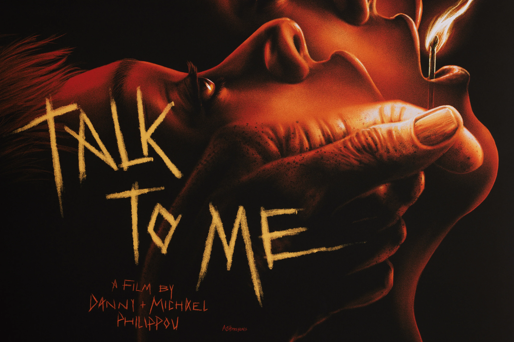
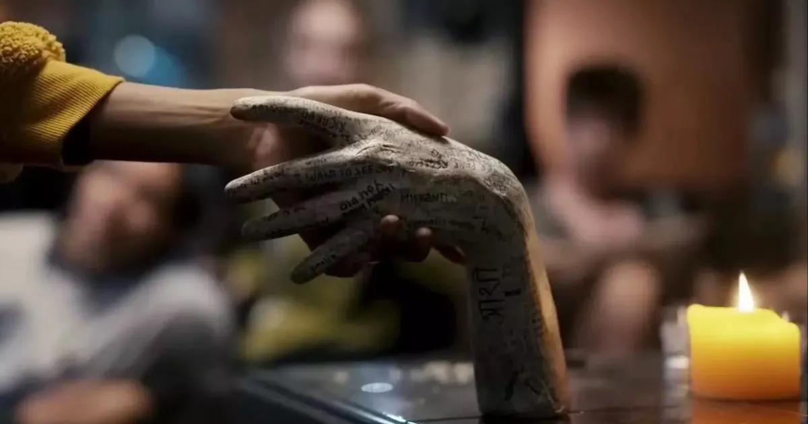

Talk to Me/Говори до мене (2022)

Сюжет «Говори до мене» — як і все в цьому фільмі — простий і навіть не до
кінця проговорений та пояснений (що надає братам Філіппу простір для
маневру в подальших приквелах, сиквелах та спінофах). Головна героїня Мія
зʼявляється на екрані в день других роковин смерті її матері. Жінка скоїла
суїцид, і тепер донька намагається побороти хворобливі спогади, власну
депресію та почуття провини, від яких щодня тікає з власного дому до
друзів. Одна з таких утеч приводить її на вельми нетипову підліткову
вечірку — знайомі Мії влаштовують марафон спіритичних сеансів за допомогою
забальзамованої руки невідомого походження. Мія та її друзі під пильною
увагою десятків смартфонів зв’язуються зі світом мертвих і навіть на
короткий час надають духам власні тіла, дотримуючись при цьому жорстких
правил, щоби мертві не заволоділи ними назавжди. Та одна з таких вечірок
закінчується кошмаром наяву: каліцтва, психоз, моральна дезорієнтація ще
більше посилюють почуття провини Мії, а заразом втягують її у своєрідну
залежність від спіритичних сеансів. Дівчина вплутується в смертельну
сутичку з нереальними фантомами своєї психіки та, на жаль, цілком реальним
світом мертвих.

Здається, щось схоже вже знімали. В чому ж тоді феномен?
Взагалі, феномен «Говори до мене» доволі загадковий. Деякі критики вже
встигли назвати його найкращим горором не лише року, а й десятиліття.
Фільм, що коштував авторам $4,5 мільйона, вийшов очевидно скромним і
камерним (вся його дія розгортається у двох-трьох квартирах, лікарні й на
автомобільній дорозі) та водночас страшенно захопливим і лякливим. Але в
цьому і варто шукати розгадку: «Говори до мене» підкорює глядачів якісною
сценарною роботою та приголомшливими горор-сценами в стилі сучасних
класиків жанру Джордана Піла, Роберта Еґґерса й Арі Астера.
Звичайно, фільм братів Філіппу — ні за бюджетом, ні за масштабом, ні за
філософією та деталізованістю всесвіту — не дотягує до «Спадковості»
(2018), «Ми» (2019) або ж «Варвара» (2022).«Говори до мене» —
ультрамалобюджетне кіно, що добивається потрібного ефекту найпростішими
діями. Інша річ, що далеко не кожному горор-режисерові ці найпростіші дії
вдаються.
Досягти такого ступеня реалізму та залученості глядачів у те, що
відбувається на екрані, — це вже саме собою колосальний успіх. І, як не
парадоксально (адже ми любимо сміятися над блогерами), Філіппу успішно
справляються з поставленими завданнями не в останню чергу завдяки своєму
досвіду блогерства та розумінню того, як можна зацікавити чи шокувати
аудиторію. У «Говори до мене» з перших секунд у кадрі мерехтять ліхтарики
смартфонів, які без розбору фіксують усе — від спіритичних сеансів до
поножів’я, втім, це апелювання до всесвіту відеоблогів робить стрічку ще
виразнішою.

Та водночас я змушений повторити: «Говори до мене» ані формально, ані
змістовно не здійснює революції в жанрі горору, проте виявляється якісною
роботою у своїй ніші й для свого глядача, що виділяє стрічку на тлі інших
малобюджетних жахів, зроблених куди менш оригінально.
Конкретний приклад — ще один австралійський горор «Слабачка», що вийшов в
український прокат майже одночасно з «Говори до мене». Порівнюючи ці дві
премʼєри, одразу стає зрозуміло, чому навколо одного піднявся такий шум, а
інший отримав скромніші оцінки.
У «Слабачці», де блогерка злітає з котушок та вирізає всіх своїх друзів,
навіть є ідентична фільму братів Філіппу сцена: герої збивають на дорозі
кенгуру, картають себе через почуття провини та розуміють, що тварину
треба переїхати ще раз, щоби позбавити мук. І якщо в «Слабачці» голова
кенгуру натуралістично розмазується по асфальту, то в «Говори до мене»
головна героїня Мія відмовляється його добивати та їде повз. У першому
випадку вбивство кенгуру не відіграє жодної ролі для сюжету — суть цієї
сцени лише в тому, щоби показати на екрані розчавлену голову тварини.
Натомість у Філіппу інцидент із кенгуру не лише психологічно розкриває
протагоністку, а й задає напрямок її мотивації та подальшому перебігу
подій.
«Говори до мене», як і личить фільмам з якісними сценаріями, властиві
підтексти. Два головні — це культура наркоспоживання (марафон спіритичних
сеансів стає прямою метафорою залежності від речовин) та переживання
травми від утрати близької людини.
В принципі, нічого нового — горори останніх років регулярно пропонують
глядачеві нетривіальний погляд на наркозалежність та досліджують тему
психологічного страждання та надламаності. Так і тут: дії Мії, спричинені
її горюванням від утрати матері, призводять до ланцюжка жахливих
незворотних подій.
Та водночас «Говори до мене» пропонує досить безнадійну картину світу, що
чимось нагадує давньогрецьку. Греки, якщо довіряти творам Гомера, Гесіода
й інших великих авторів античності, бачили своє життя після смерті в Аїді
в похмурих тонах. Світ мертвих у братів Філіппу теж не дарує глядачам
оптимізму — похмура сумна темрява, вийти з якої можна, лише вчепившись у
муміфіковану руку покійника. В цьому світі не те що не має Бога — про
нього тут узагалі не чули. До смерті — життя, сповнене труднощів, а після
— суцільна темрява. Напевно, це в «Говори до мене» і є найстрашнішим.